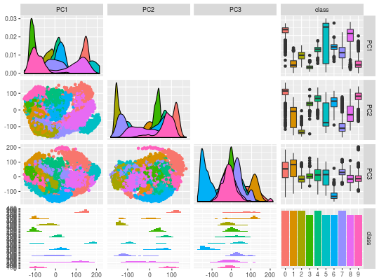

All Pairs Plots
allpairs_plot(x, y, type = "pca", rank, k = 0)
type = "identity", the default, uses \(\mathbf{\Gamma} = \mathbf{I}\) to fit a reduced-rank regression. type = "pca" fits a principal component analysis model as a special case of reduced-rank regression. type = "cva" fits a canonical variate analysis model as a special case of reduced-rank regression. type = "lda" fits a linear discriminant analysis model as a special case of reduced-rank regression.scatterplot matrix.
data(pendigits) digits_features <- pendigits[, -35:-36] digits_class <- pendigits[,35] allpairs_plot(digits_features, digits_class, type = "pca", rank = 3, k = 0.0001)#>#>#>